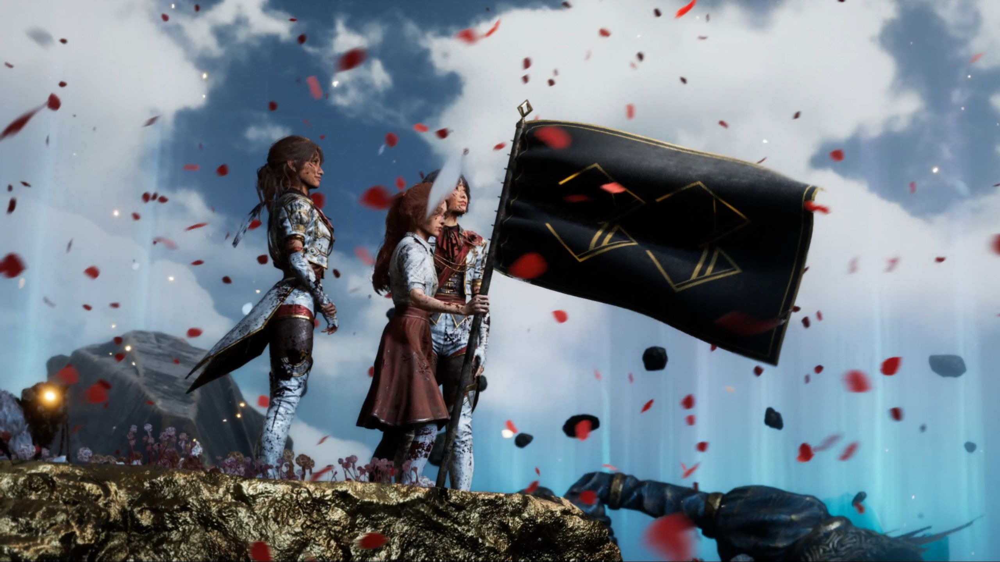
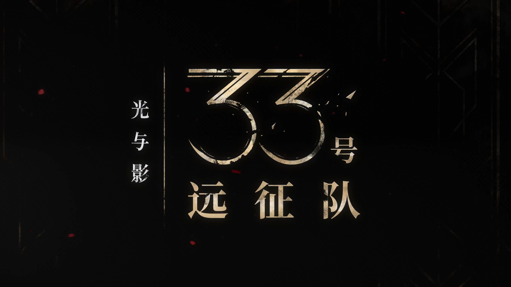

第五章
在这个世界里，死亡并非随机、意外或无意义。它被量化了——你知道你会死于绘师的某一笔， 只是不知道具体是哪一笔。这比纯粹的死亡更残酷，因为它剥夺了你"也许我还有时间"的错觉。 现实中的我们不也如此？我们都知道自己会死，只是选择不去想。 远征队的故事强迫我们面对这个被日常遮蔽的事实：在已知终点的前提下，你如何定义"活着"？
Gustave 踏上远征的最深层驱动力，并非拯救世界——而是Alicia。 一个已经不在的人的影子，足以推动一个活着的人走完最远的路。 这引出一个令人哽咽的命题：我们与逝者的关系，不是"他们在哪"，而是"他们在我们身上留下了什么"。 家庭不是血缘，是那些即使不在了也依然拽着你往前走的人。
绘师创造了一个画中世界——美丽、有序、可控。这难道不正是逃避的终极形态？ 当现实太过痛苦，我们都会为自己画一个"更好的世界"。 但问题是：一个人不能永远活在自己画的世界里。 绘师的悲剧也许就在于——她把自己困在了一幅永远无法完成的画中。 这幅画的每一笔都在杀人，但她已经停不下来了。
游戏的终极主题是哀悼（grief）——一种需要被正视、被完成的心理工作。 远征队一路走来，每个人都在哀悼不同的事物：爱人、自己未竟的人生、已经失去的世界。 但他们逐渐意识到：哀悼不是遗忘。哀悼是学会带着伤痛，继续前行。 真正的告别，不是删除记忆，而是让记忆成为一种力量而非枷锁。
第六章
爱不是占有，而是允许逝去的人真正离开。
——《33号远征队》核心启示之一
Gustave 对 Alicia 的执着，一开始是"我不能让她走"。他踏上远征，表面上是去终结绘师， 但潜意识里也许是在追寻一种与亡者的重逢。真正的转折点在于他意识到： Alicia 已经走了。而继续活着的人，要做的是让离去的人可以安心地离去。 这才是最深层的爱——不是死死拽住，而是放手。
你不能永远活在自己画的世界里。总有一天，要放下画笔，睁开眼睛。
——《33号远征队》核心启示之二
绘师的角色设定是最令人心碎的部分。她用画笔创造了一个可控的世界，一画就是数十年。 但当"创造"变成"毁灭"，当"自我保护"变成"囚禁自己"——放下画笔就成了最难的课题。 这何尝不是对我们每个人的提醒：那些我们紧抓不放的执念、信念、甚至伤痛， 也许都有权力和必要在某一天被轻轻放下。
其一：行动本身就是胜利。远征队前 32 次都失败了。但他们依然派出第 33 支。
不是因为愚蠢的乐观，而是因为出发本身就是对绝望的否定。在必败的局面中，
选择行动——这件事本身就是一种美学。
其二：你不需要"赢得"生命。远征队的目标并非"永远消除死亡"（那是不可能的），
而是打破一个循环。生命的意义不在于无限延续，而在于在有限的长度里，
活出无限的深度。
其三：告别是一种能力。这个游戏教会我们的事情中，最珍贵的大概就是：
告别不是软弱的投降，而是勇敢的选择。能够说再见的人，才有能力继续走。
间章

画中世界的风景 —— 美丽与哀愁交织，如同绘师破碎的内心

现实世界的残骸 —— 在被绘师涂改的土地上，远征队踏过前人的遗迹
附录